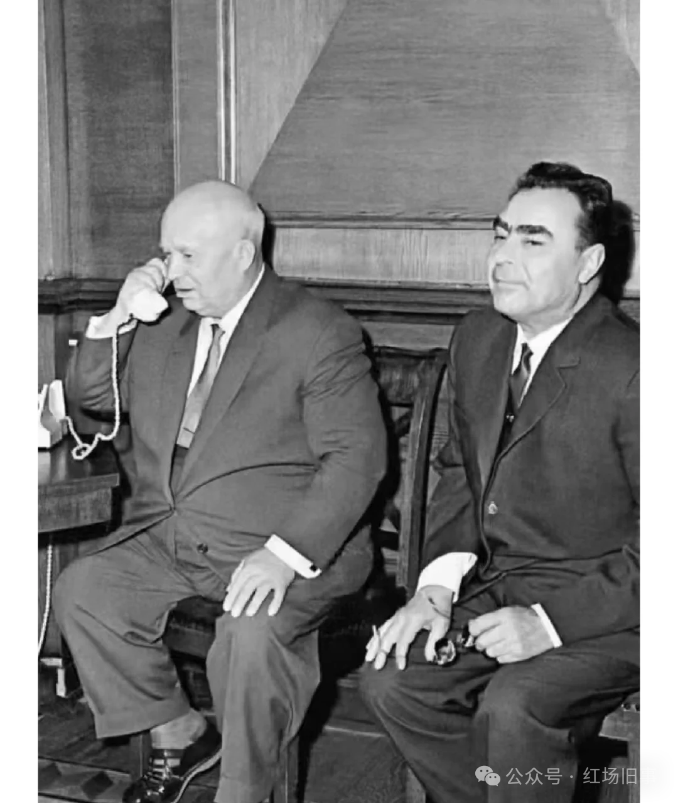
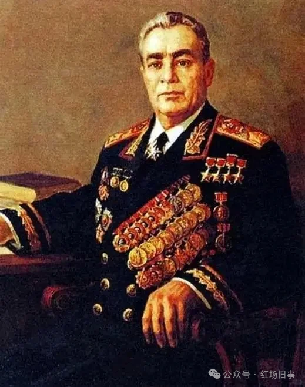
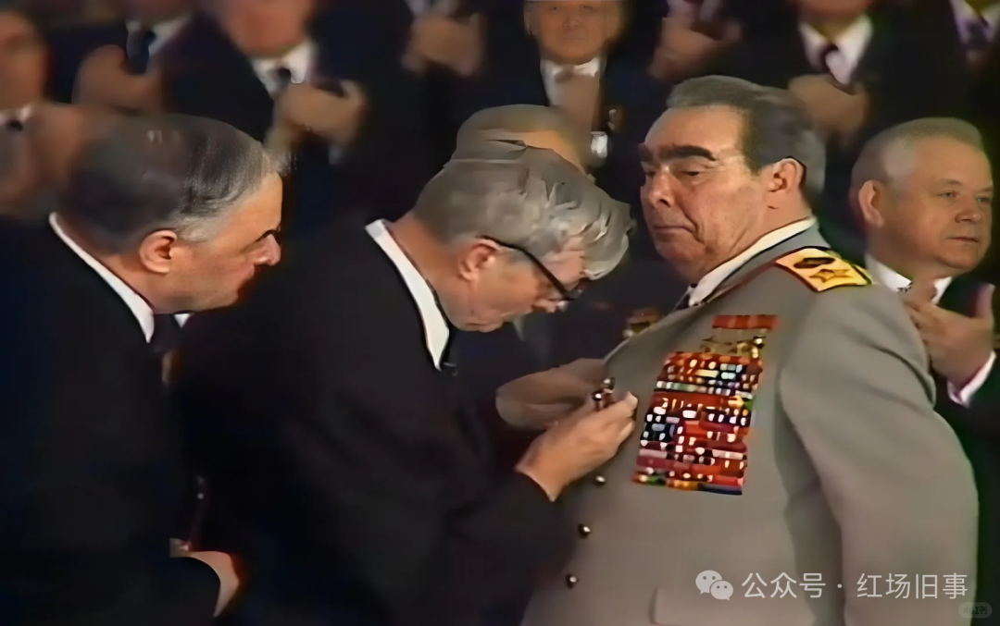
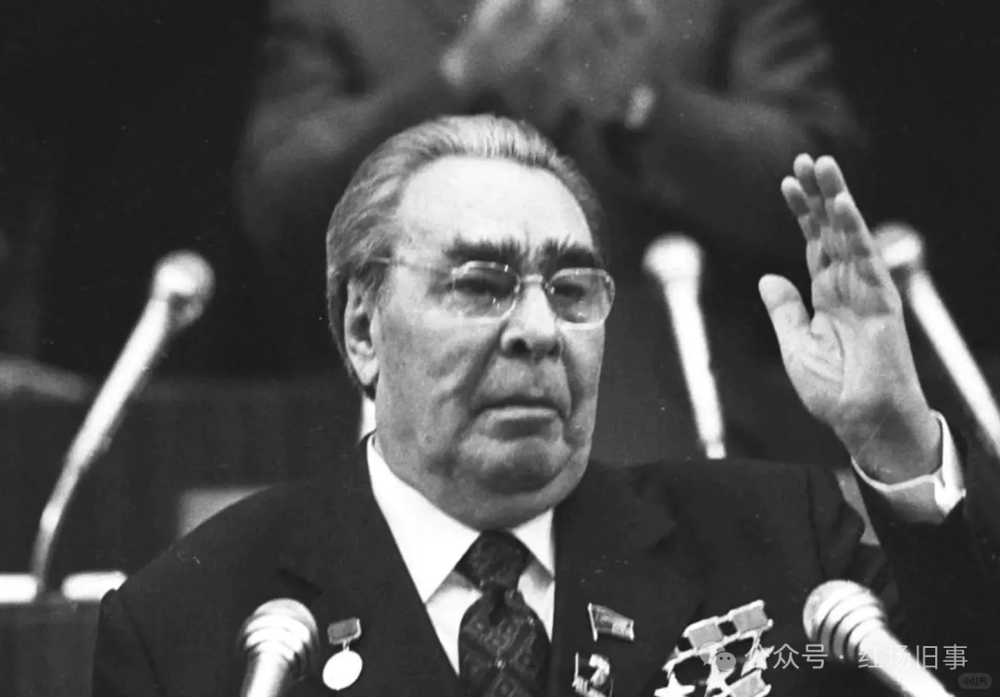

1964年那场“宫廷政变”：赫鲁晓夫为何被自己人赶下台？
文字与图片版权归各自权利人所有。 查看公众号原文 ↗
1964年10月，黑海边的一个电话赫鲁晓夫正在皮聪大海滨别墅享受难得的假期。他刚刚通过电视与三名宇航员通话，庆祝他们成功返回地球。一切都显得那么正常。10月11日，电话响了。
电话那头是勃列日涅夫，语气平静：“尼基塔·谢尔盖耶维奇，主席团正在开会讨论你的农业改革方案，需要你回来一趟。”

赫鲁晓夫拒绝了。他不喜欢被打断休假。电话再次响起。这次语气变了：“如果你不回来，主席团将在你缺席的情况下继续开会。”赫鲁晓夫意识到事情不对，匆匆登机返回莫斯科。飞机降落后，他没有被送回家，而是直接被带进克里姆林宫的会议室。三天后，赫鲁晓夫“因年迈和健康状况恶化”被解除一切职务。勃列日涅夫当选苏共中央第一书记。一场平静的“宫廷政变”，结束了苏联历史上最动荡的改革时代，开启了一个长达18年的新纪元。这个时代后来被称为——“停滞时代”。
一、赫鲁晓夫为何被赶下台：鲁莽、乱改、得罪官僚赫鲁晓夫的下台不是偶然。在他执政后期，几乎得罪了所有该得罪的人。第一，农业改革的失败。玉米运动成了全国笑柄——在寒冷地区强制种玉米，收成惨不忍睹。垦荒运动前几年增产，但很快遭遇黑风暴，上千万公顷耕地被毁。1963年，苏联不得不动用黄金储备进口粮食，对于一个超级大国来说是莫大的耻辱。第二，瞎折腾式的改组。他把党组织一分为二——工业党和农业党，造成管理混乱，各级干部无所适从。今天合并的部门明天又分开，今天提拔的干部明天又下台，整个官僚系统被折腾得怨声载道。第三，也是最重要的——他动了官僚们的“饭碗”。赫鲁晓夫取消了斯大林的“钱袋”制度（装在信封里秘密发放的高额补贴），砍掉了官员的免费早餐、免费别墅、专用汽车。更致命的是，他推行干部任期制和轮换制，规定每次选举必须更换一定比例的成员。这意味着官僚们不仅丢了特权，还可能丢掉职位。一个曾在中央机关工作的老干部回忆：“赫鲁晓夫的十次打击，比斯大林的十次打击还可怕。斯大林杀人，赫鲁晓夫砸饭碗。”苏斯洛夫在中央全会上报告时，列举了赫鲁晓夫的罪名：主观主义、唯意志论、个人迷信、任人唯亲、把女婿当外交部长用……但真正让在座所有人感同身受的，是那句：“不尊重干部，不尊重稳定。”
二、勃列日涅夫路线：稳定、特权、不折腾勃列日涅夫上台后做的第一件事，就是安抚被赫鲁晓夫得罪透了的官僚阶层。

恢复特权。被取消的“钱袋”回来了，免费别墅回来了，专车回来了，特供商店回来了。而且范围更大，种类更多。勃列日涅夫时期，党政干部与普通群众的收入差距达到30至44倍。废除轮换制。赫鲁晓夫的干部任期制被全盘否定。勃列日涅夫在大会上承诺：“要保证对干部的尊重。”从此，各级官员一旦坐上位置，就可以干到退休——甚至干到死。勃列日涅夫本人执政18年，他的亲信们也纷纷占据高位十几年不动。乌兹别克斯坦第一书记拉希多夫一干20年，整个共和国的党政经法部门全是他的亲信，仅中央机关里他的亲属就达14人。勃列日涅夫路线很简单：稳定压倒一切，不折腾就是最大的政治。“改革”这个词很快被禁止使用，取而代之的是“完善”。勃列日涅夫认为，苏联的体制已经很完美，不需要改革，只需要修修补补。这套路线让官僚们欢欣鼓舞。一个笑话在莫斯科流传：问：勃列日涅夫和赫鲁晓夫有什么区别？答：赫鲁晓夫让你干活，勃列日涅夫让你活着。
三、阶层固化：nomenklatura特权阶层成型勃列日涅夫时期的最大遗产，是让一个特殊阶层彻底成型并固化——nomenklatura，职务名册制下的特权阶层。这个词源于拉丁语，本意是“人名名单”。在苏联，它特指由上级任命的职位清单，以及占据这些职位的官员群体。这个阶层有几个鲜明特征：第一，权力世袭。官员们形成一个封闭的圈子，官官相护，互相推荐任用。斯大林的儿子25岁当将军，勃列日涅夫的儿子也年纪轻轻身居高位。权力可以继承。第二，终身任职。赫鲁晓夫试图打破的终身制，在勃列日涅夫手里全面恢复。苏共中央委员会的连任率达到90%，老人政治遍地都是。很多干部坐在高位上直到死去。第三，利益集团化。他们垄断了权力、意识形态和经济管理，有着自己的生活方式、消费渠道和价值观念。他们不再把自己看作“公仆”，而是看作这个国家的实际主人。阿尔巴托夫后来回忆：“这个时期，一个具有代表性的特征，是官僚主义、本位主义、机关专权得到了史无前例的泛滥。几乎没有人对任何事情真正承担责任。”这个阶层后来被证明是苏联的掘墓人。1991年苏联解体时，正是这批“在册权贵”摇身一变，把手中的权力换成了私有化时代的财富。因为他们早就明白：与其守着公有制当管家，不如趁乱把它变成自己的。

勃列日涅夫时期给后人的印象是“稳定”。没有战争，没有大清洗，没有剧烈的政策变动。但这稳定的背后，是全面的停滞。经济停滞。“八五”计划（1966-1970）还算不错，之后增长率逐年递减。到70年代末，苏联经济实际已处于零增长。石油出口掩盖了问题，一旦油价下跌，整个国家就会暴露在危机之下。科技停滞。世界正在经历第三次科技革命，计算机、信息技术突飞猛进。苏联却满足于在重工业和军火上的优势，民用技术落后西方几十年。思想停滞。意识形态变成死板的教条。任何新想法都被视为“异端”，任何改革都被看作“动摇”。知识分子被压制，独立思考成为奢侈品。社会停滞。人们不再相信报纸上的口号，不再关心政治，不再对未来抱有期待。一个普遍的心态是：“我们假装工作，他们假装付钱。”酗酒、盗窃、黑市盛行。苏联著名学者布尔拉茨基这样描述勃列日涅夫时代：“这18年不是那么单一，不是那么全然灰暗。但如果我们用更高的标准来衡量，这的确是停滞的18年——没有出现过任何沿着改善社会道路前进的历史性里程碑。”
结语：当稳定变成静止1964年10月，勃列日涅夫接手的是一个充满矛盾的苏联：赫鲁晓夫的改革失败了，但改革的必要性还在；官僚们欢呼胜利了，但胜利的代价是整个系统的僵化。

勃列日涅夫选择了一条最省力的路：安抚既得利益者，拒绝任何变革，用稳定掩盖问题，用口号代替行动。这条路让他平稳地坐了18年，也让苏联平稳地走向衰亡。1982年勃列日涅夫去世时，苏联表面上仍是超级大国——核武器与美国平起平坐，坦克数量世界第一，奥运会金牌拿得最多。但深层的问题已经积重难返：经济停滞、科技落后、官僚腐败、民心离散。后来的安德罗波夫和契尔年科只是过渡，戈尔巴乔夫上台时面对的，是一个“已经没有潜力可消耗”的国家。一个苏联时期的笑话，精准地预言了这个结局：问：什么是勃列日涅夫主义？答：就是当你走在悬崖边上，别人都在喊“小心”，你却说“别吵，让我再走两步”。他走了18年。悬崖在1985年等着戈尔巴乔夫，在1991年等着整个国家。而那些在1964年赶走赫鲁晓夫的官僚们，在1991年又做了一次选择：这次他们赶走了整个苏联，顺便带走了他们早已盯上的财富。1964年的那个电话，改变的不仅是赫鲁晓夫一个人的命运。